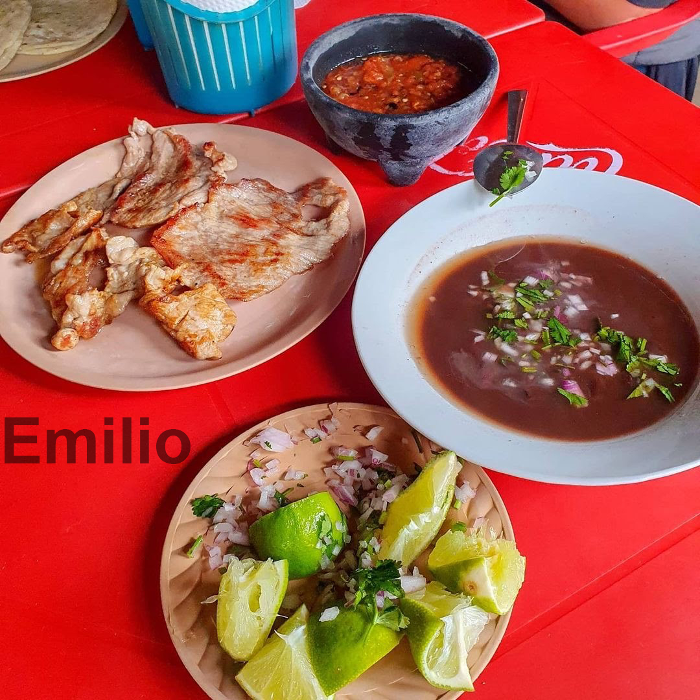

Gastronomía
Tres platillos tradicionales más populares de Mérida:
1. Cochinita Pibil: El indiscutible rey de la cocina yucateca. Consiste en carne de cerdo adobada en achiote, envuelta en hojas de plátano y cocinada tradicionalmente en un horno subterráneo (piib). Se sirve típicamente en tacos o tortas acompañados de cebolla morada curtida y chile habanero.
2. Sopa de Lima: Un caldo ligero y reconfortante elaborado con pollo desmenuzado, crujientes tiras de tortilla frita y el toque aromático único e indispensable de la lima local, un cítrico característico de la península que le da un sabor inigualable.
3. Panuchos y Salbutes: Antojitos tradicionales hechos a base de maíz. Los panuchos llevan una tortilla rellena de frijol negro que se fríe hasta quedar crujiente, mientras que los salbutes son más suaves. Ambos se cubren con lechuga, carne de pavo o pollo, aguacate y jitomate.